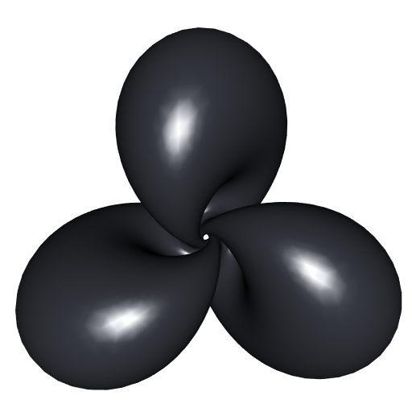
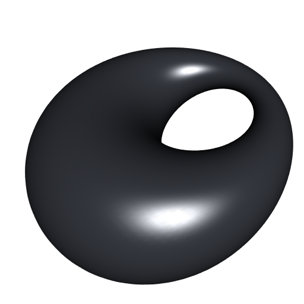
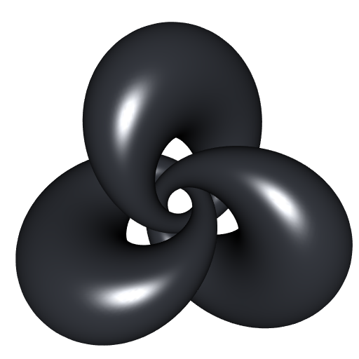

Back to the parametric Hopf torus
In a previous post, I explained how to get a parameterization of a Hopf cylinder or torus. There is a clearer way, which I present here.
For the Hopf map, the preimage of a point \(p=(p_x,p_y,p_z)\) on the unit sphere \(S^2\) is the circle on \(S^3\) with parametrization: \[ \begin{array}{ccc} \mathcal{C}_p \colon & (0,2\pi[ & \longrightarrow & S^3 \\ & \phi & \longmapsto & \mathcal{C}_p(\phi) \end{array} \] where \[ \mathcal{C}_p(\phi) = \frac{1}{\sqrt{2(1+p_z)}} \begin{pmatrix} (1+p_z) \cos(\phi) \\ p_x \sin(\phi) - p_y \cos(\phi) \\ p_x \cos(\phi) + p_y \sin(\phi) \\ (1+p_z) \sin(\phi) \end{pmatrix}. \]
Now consider a spherical curve. That is, let \(\Gamma\) be a function mapping an interval \(I \subset \mathbb{R}\) to the unit sphere \(S^2\). Then the Hopf cylinder corresponding to \(\Gamma\) has parameterization \[ \begin{array}{ccc} H_\Gamma \colon & I \times (0,2\pi[ & \longrightarrow & S^3 \\ & (t, \phi) & \longmapsto & \mathcal{C}_{\Gamma(t)}(\phi) \end{array}. \] Recall the tennis ball curve example, given for a real constant \(A\) and an integer constant \(n\) by: \[ \Gamma(t) = \begin{pmatrix} \sin\bigl(\pi/2 - (\pi/2 - A) \cos(nt)\bigr) \cos\bigl(t + A \sin(2nt)\bigr) \\ \sin\bigl(\pi/2 - (\pi/2 - A) \cos(nt)\bigr) \sin\bigl(t + A \sin(2nt)\bigr) \\ \cos\bigl(\pi/2 - (\pi/2 - A) \cos(nt)\bigr) \end{pmatrix}, \quad t \in (0,2\pi[. \]
A <- 0.44
n <- 3
Gamma <- function(t){
alpha <- pi/2 - (pi/2-A)*cos(n*t)
beta <- t + A*sin(2*n*t)
c(
sin(alpha) * cos(beta),
sin(alpha) * sin(beta),
cos(alpha)
)
}
HopfInverse <- function(p, phi){
c(
(1+p[3])*cos(phi),
p[1]*sin(phi) - p[2]*cos(phi),
p[1]*cos(phi) + p[2]*sin(phi),
(1+p[3])*sin(phi)
) / sqrt(2*(1+p[3]))
}
Stereo <- function(q){
2*q[1:3] / (1-q[4])
}
F <- function(t, phi){
Stereo(HopfInverse(Gamma(t), phi))
}Now we’re ready to plot the stereographic projection of the Hopf torus with misc3d:
fx <- Vectorize(function(u,v) F(u,v)[1])
fy <- Vectorize(function(u,v) F(u,v)[2])
fz <- Vectorize(function(u,v) F(u,v)[3])
library(misc3d)
parametric3d(fx, fy, fz, umin = 0, umax = 2*pi, vmin = 0, vmax = 2*pi,
n = 300, smooth = TRUE, color = "#363940")
rgl::view3d(90, 0, zoom = 0.65)
A ring cyclide is a Hopf torus. It corresponds to the case when \(\Gamma\) describes a circle on the unit sphere \(S^2\). Below is a R function to compute such a circle.
# helper function: plane passing by points p1, p2, p3
plane3pts <- function(p1,p2,p3){
xcoef <- (p1[2]-p2[2])*(p2[3]-p3[3])-(p1[3]-p2[3])*(p2[2]-p3[2])
ycoef <- (p1[3]-p2[3])*(p2[1]-p3[1])-(p1[1]-p2[1])*(p2[3]-p3[3])
zcoef <- (p1[1]-p2[1])*(p2[2]-p3[2])-(p1[2]-p2[2])*(p2[1]-p3[1])
offset <- p1[1]*xcoef + p1[2]*ycoef + p1[3]*zcoef
c(xcoef, ycoef, zcoef, offset)
}
# helper function: cross product
cross <- function(v, w){
c(
v[2] * w[3] - v[3] * w[2],
v[3] * w[1] - v[1] * w[3],
v[1] * w[2] - v[2] * w[1]
)
}
# circle passing by points three points p1, p2, p3
# given in Cartesian coordinates
circle3pts <- function(p1, p2, p3){
p12 <- (p1+p2)/2
p23 <- (p2+p3)/2
v12 <- p2-p1
v23 <- p3-p2
plane <- plane3pts(p1, p2, p3)
A <- rbind(plane[1:3], v12, v23)
b <- c(plane[4], sum(p12*v12), sum(p23*v23))
center <- c(solve(A) %*% b)
r <- sqrt(c(crossprod(p1-center)))
i <- (p1-center) / r
normal <- plane[1:3] / sqrt(c(crossprod(plane[1:3])))
list(center = center, radius = r, i = i, j = cross(i,normal))
} # circle parameterization: center + radius*(cos(t)*i + sin(t)*j)
# circle on unit sphere passing by three points
# given in spherical coordinates
circleOnUnitSphere <- function(thph1, thph2, thph3){
theta1 <- thph1[1]; phi1 <- thph1[2]
theta2 <- thph2[1]; phi2 <- thph2[2]
theta3 <- thph3[1]; phi3 <- thph3[2]
p1 <- c(sin(theta1)*cos(phi1), sin(theta1)*sin(phi1), cos(theta1))
p2 <- c(sin(theta2)*cos(phi2), sin(theta2)*sin(phi2), cos(theta2))
p3 <- c(sin(theta3)*cos(phi3), sin(theta3)*sin(phi3), cos(theta3))
circle3pts(p1, p2, p3)
}The function returns a list with four elements: a point center, a number radius, and two vectors i and j. The parameterization of the spherical circle is then center + radius*(cos(t)*i + sin(t)*j) for t \(\in (0, 2\pi[\).
Let’s try. We enter three pairs of spherical coordinates and we apply the circleOnUnitSphere function:
thph1 = c(1.3, 1.5)
thph2 = c(1.9, 2.8)
thph3 = c(1, 2)
circ <- circleOnUnitSphere(thph1, thph2, thph3)Then we define the parametrization of the stereographically projected Hopf torus:
F <- function(t, phi){
p <- with(circ, center + radius*(cos(t)*i + sin(t)*j))
Stereo(HopfInverse(p, phi))
}And we plot:
parametric3d(fx, fy, fz, umin = 0, umax = 2*pi, vmin = 0, vmax = 2*pi,
n = 250, smooth = TRUE, color = "#363940")
rgl::view3d(90, 0, zoom = 0.65)
By rotating our spherical circle about the \(z\)-axis, we can obtain the linked cyclides. Below is a R function to perform a rotation in spherical coordinates. See this post on my former blog for some explanations.
# helper functions: basic rotations ####
Rx <- function(alpha){
rbind(c(cos(alpha/2), -1i*sin(alpha/2)),
c(-1i*sin(alpha/2), cos(alpha/2)))
}
Ry <- function(alpha){
rbind(c(cos(alpha/2), -sin(alpha/2)),
c(sin(alpha/2), cos(alpha/2)))
}
Rz <- function(alpha){
rbind(c(exp(-1i*alpha/2), 0),
c(0, exp(1i*alpha/2)))
}
# 3D rotation in spherical coordinates ####
#' @description Rotation of a vector given in spherical coordinates.
#' @param theta_phi spherical coordinates, a vector containing the
#' colatitude (or polar angle), between 0 and pi, and the longitude
#' (or azimuthal angle), between 0 and 2pi
#' @param axis either a letter 'x', 'y' or 'z', a numeric vector of
#' length 2 (the spherical coordinates of the axis), or a numeric
#' vector of length 3 (the Cartesian coordinates of the axis)
#' @param alpha angle of rotation
#' @return The spherical coordinates of the transformed vector.
rotation <- function(theta_phi, axis="x", alpha){
if(is.character(axis)){
axis <- match.arg(axis, c("x","y","z"))
R <- switch(axis,
"x" = Rx(alpha),
"y" = Ry(alpha),
"z" = Rz(alpha))
}else if(length(axis) == 2){
Theta <- axis[1]; Phi <- axis[2]
R <- Rz(Phi) %*% Ry(Theta) %*% Rz(alpha) %*%
t(Ry(Theta)) %*% t(Conj(Rz(Phi)))
}else if(length(axis) == 3){
axis <- axis / sqrt(c(crossprod(axis)))
X <- rbind(c(0,1), c(1,0))
Y <- rbind(c(0,-1i), c(1i,0))
Z <- rbind(c(1,0), c(0,-1))
R <- cos(alpha/2)*diag(2) - 1i*sin(alpha/2) *
(axis[1]*X + axis[2]*Y + axis[3]*Z)
}else{
stop("`axis` must be either:
- a letter ('x', 'y' or 'z')
- a numeric vector of length two (spherical coordinates)
- a numeric vector of length three (Cartesian coordinates)")
}
theta <- theta_phi[1]; phi <- theta_phi[2]
qubit <- c(cos(theta/2), exp(1i*phi)*sin(theta/2))
newqubit <- R %*% qubit
z0 <- newqubit[1,1]; z1 <- newqubit[2,1]
c(2*atan(Mod(z1)/Mod(z0)), Arg(z1)-Arg(z0))
}Now, let’s rotate our spherical circle and plot:
thph1 <- rotation(thph1, "z", 2*pi/3)
thph2 <- rotation(thph2, "z", 2*pi/3)
thph3 <- rotation(thph3, "z", 2*pi/3)
circ <- circleOnUnitSphere(thph1, thph2, thph3)
parametric3d(fx, fy, fz, umin = 0, umax = 2*pi, vmin = 0, vmax = 2*pi,
n = 250, smooth = TRUE, color = "#363940", add = TRUE)
thph1 <- rotation(thph1, "z", 2*pi/3)
thph2 <- rotation(thph2, "z", 2*pi/3)
thph3 <- rotation(thph3, "z", 2*pi/3)
circ <- circleOnUnitSphere(thph1, thph2, thph3)
parametric3d(fx, fy, fz, umin = 0, umax = 2*pi, vmin = 0, vmax = 2*pi,
n = 250, smooth = TRUE, color = "#363940", add = TRUE)